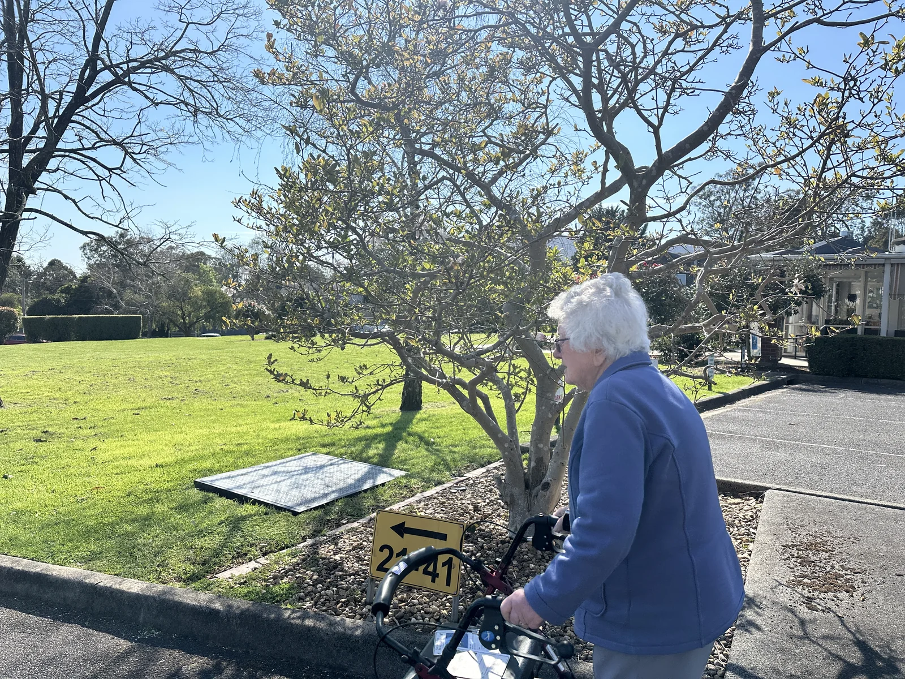
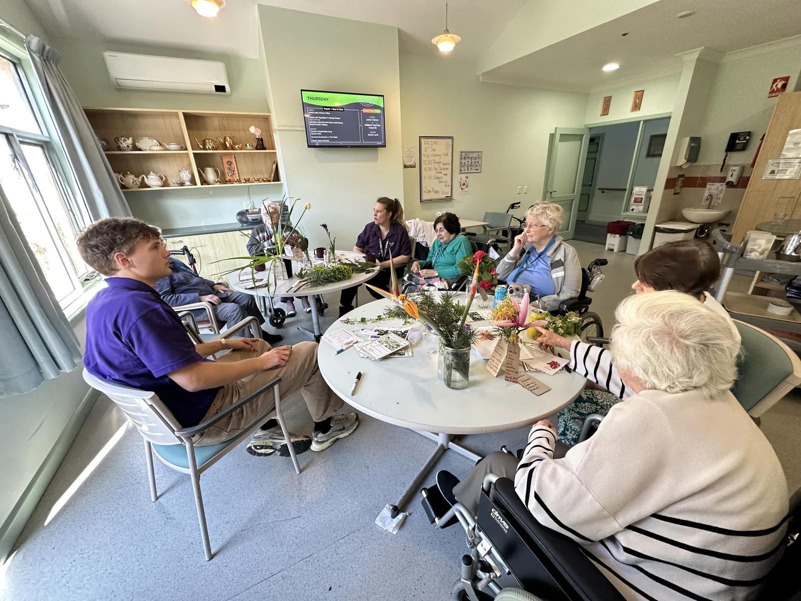
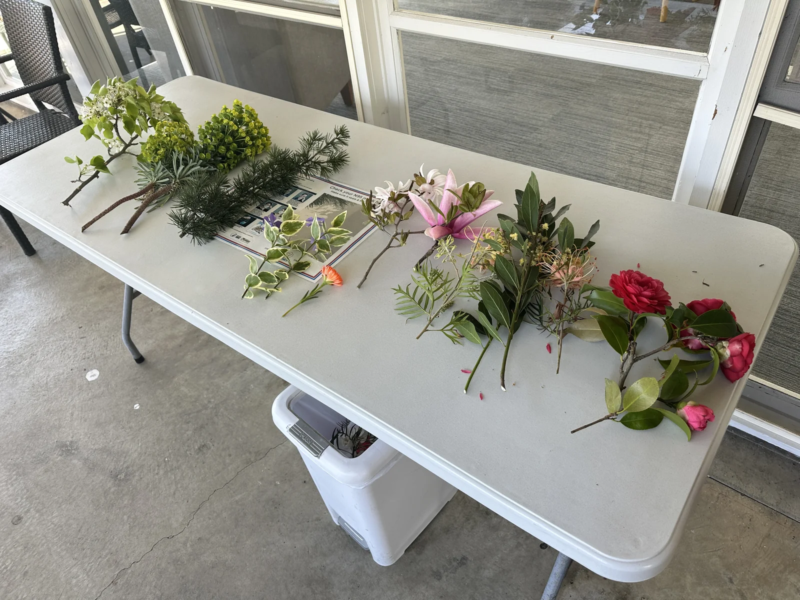
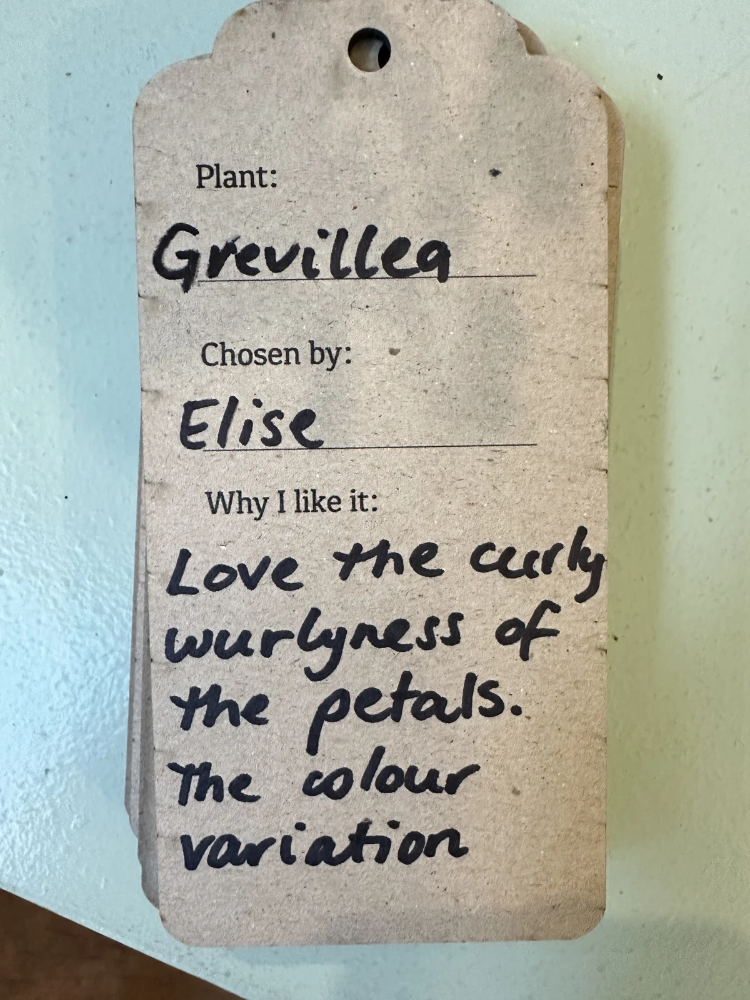

Our Outdoor
Stories.
Connecting garden walks, plant choices, and shared stories across indoor and outdoor spaces.

Begin with a familiar walk.
This project starts with an activity that already exists: morning walks. I am exploring how simple materials can help connect what people notice outdoors with conversations and contributions indoors.
The design includes route maps, plant photographs, story invitations, and a shared display. Working with care staff means attending to how walks are organised, who wants to join, and what can fit into everyday routines.
{kind=link}

More than one way to join.
Participation can include walking, looking at a photograph, handling a plant, talking, drawing, or asking someone to write down a thought. Indoor conversations also create an opening for people who have not joined a walk.
{kind=link}

Holding a card can compete with keeping both hands on a walker. Observations like this are shaping questions about carrying materials, pausing along a route, and support from a companion.
A preference leaves a trace.
Plant choices offer a concrete place to start. A colour, a texture, or a flower’s shape can become something to notice and describe. Handwritten labels keep a record of these preferences.
{kind=link}

{kind=link}

The labels record small, specific observations, while the story invitations leave room for a longer contribution.
A flower can hold a story.
Handwritten tags connect chosen plants with observations, preferences, and memories. Placed around a glass bottle, these contributions stay close to the flower that prompted them.

What stays after the session?
The display brings a route map, plant information, contributions, and fresh flowers into a shared indoor space. Story invitations and flower-care materials are part of the ongoing exploration of what might carry an activity beyond a single meeting.

What draws someone back to the display? Who adds to it or looks after the flowers? How can the activity continue when the researcher is not there?
This project is ongoing. The photographs document activities and materials, while longer-term use and outcomes remain research questions.